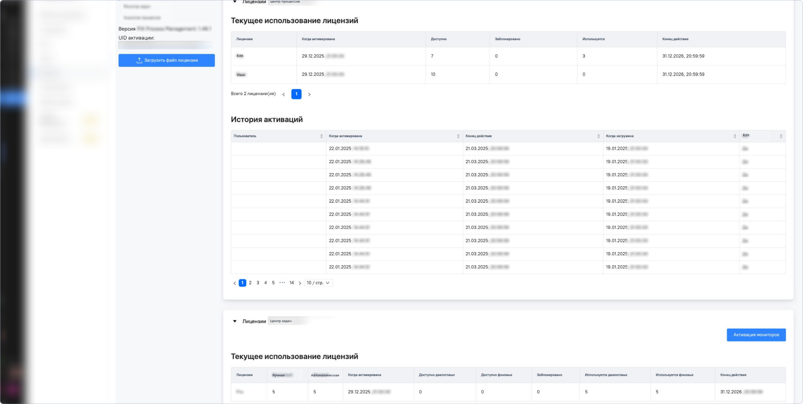
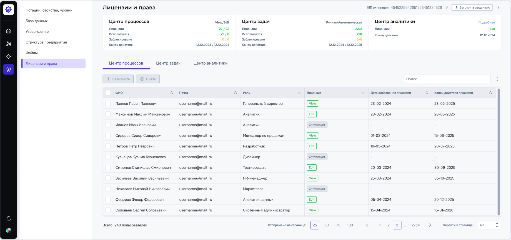
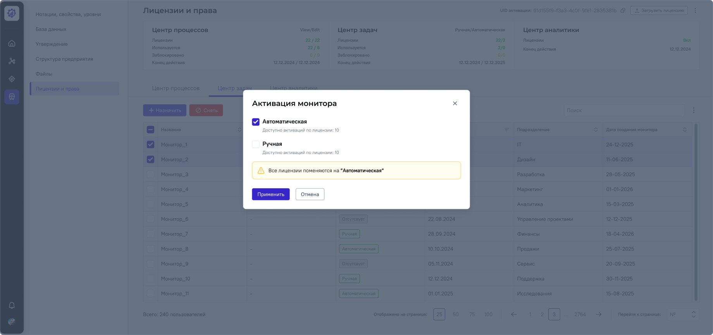
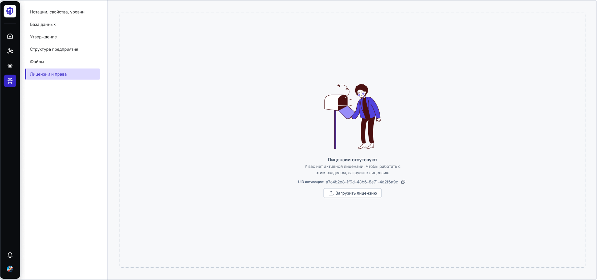

Раздел лицензии и права
Задача
- — Унифицировать управление разными типами лицензий (Процессы / Задачи / Аналитика) в едином интерфейсе
- — Снизить риск ошибок планирования за счёт прозрачности лимитов в реальном времени
- — Улучшить наблюдаемость: сделать статусы и историю лицензий прозрачными для пользователя
- — Ускорить администрирование прав и доступов для новых сотрудников
Что я сделал
- — Провёл аудит и выявил «слепые зоны» в истории активаций и навигации, которые приводили к путанице в бизнес-процессах
- — Сформулировал и проверил гипотезы о массовом назначении прав и прозрачности лимитов
- — Прошёл путь от быстрых логических скетчей до High-fidelity макетов, готовых к разработке
- — Самостоятельно провёл юзабилити-тестирование, которое вскрыло критическую проблему: пользователи ожидали замены лицензии, а не её дополнения
- — Оперативно изменил механику продукта на понятную людям модель «сброс и замена», предотвратив будущие ошибки в логике системы
Результат
- — Ускорил администрирование: за счёт единого интерфейса и внедрения механики массового назначения прав
- — Исключил критические ошибки: новая логика «сброса и замены» сделала процесс изменения прав безопасным и интуитивно понятным
- — Обеспечил прозрачность ресурсов: актуальные лимиты теперь видны в реальном времени, что упростило планирование для бизнеса
- — Снизил порог входа: унификация паттернов взаимодействия позволила новым администраторам быстрее осваивать систему без долгого обучения
До

После


